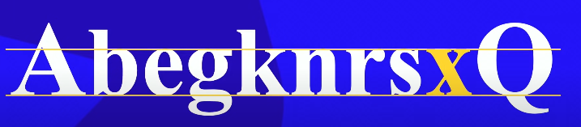

Anotações sobre CSS
Como fazer efeito gradiente

Tipografia
O termo Tipografia surgiu lá no começo do securlo 15.
"Monge copista", a função dele era copias o livros(A mão).
O pai da emprensa foi Johannes Gutenberg, mas ele não foi o primeiro a fazer isso, os primeiros foram o Chineses.
tipografia veio de duas palavras gregas, tipo "týpos"(imprensão, colocar coisas nos papeis) e Grafia"Graphia"(quer dizer escrita)
TIPOGRAFIA brasicamente é um estudo de como vou escrever coisas no papel ou telas.
TIPOGRAFIA 2
(CURIOSIDADE) Quando alguem cria uma fonte nova, primeiro eles desenha a letra X minusico dessa fonte, porque exite uma metrica chamada "Altura X", ela define a altura base das letras minuscula das letras dessa fonte
Itens Metricos, itens que precisa medir como esta na imagem abaixo

Altura das muinusicas se chama "altura X"
Depois podemos ver a "altura das maiúsculas"
Logo em seguida tem a Altura do vazemnto que ela se chama "Ascendente"
E tambem tem a altura que vazou para baixo que tem o apelido de "calda" que se chama de "Descendente"
E altura total somando todas as alturas se chama de "Corpo"
Anatomicos Geometricos

Nem todos as fontes tem esse componente
Ele cria uma linha imaginaria que facilita na leitura.
Componente anatomicos geometricos.

Componentes de letras de fontes de glifos e de caldas.
Familia tipograficas.

Primeira: fonte serifada, que tem aqueles pezinhos ao qual é facil de ler
Sans-serif, significa sem serifa, de preferencia é boa usar em site e texto muito longos
Fonte "Monoespaçada" uma fonte que tem as letras mesma largura, o memso espaço!
quarta simula fonte escrita a mão
quinta fonte são as fontes temáticas.
Tà ai, que coisa maluca